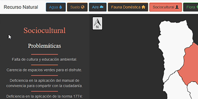
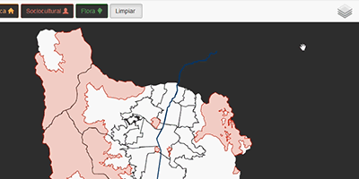
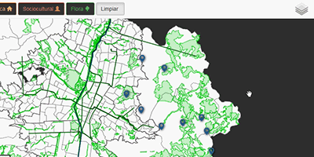
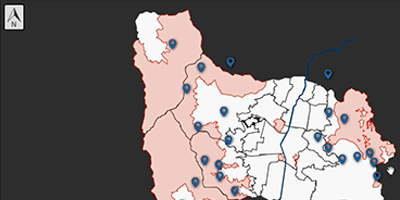
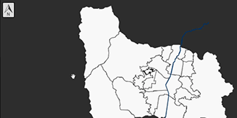
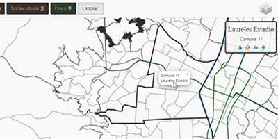
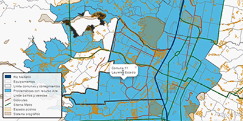

Seleccione un recurso natural del menú para ver los mapas relacionados. Se asocia a cada recurso un icono para su fácil identificación.

Active o desactive mapas desde el boton de capas.

Use el la rueda del mouse o las teclas + y - para hacer zoom en el mapa.
Haga click sostenido sobre el mapa y arrastre o use las teclas de dirección para navegar por el mapa.

Pase el puntero del mouse sobre los elementos del mapa para visualizar su nombre. De click sobre cualquier elemento para fijar su nombre en la posición deseada.

Ingrese en la vista de comuna o corregimiento haciendo doble click sobre la comuna deseada. Haga doble click nuevamente sobre el mapa para salir de esta vista.

Observe el cuadro de información en la vista de comuna o corregimiento. En este se muestran los iconos de los recursos con los que esta comuna tiene problematicas ambientales. De click en estos iconos para cambiar a la vista del recurso.

Si necesita más espacio para visualizar el mapa, sobretodo al acceder desde un dispositivo mobil, puede colapsar las convenciones del mapa haciendo click sobre ellas. Haga click sobre el boton que aparece en su lugar para visualizarlas nuevamente.

Regrese a este manual y limpie el mapa dando click en el boton Limpiar del menú principal.